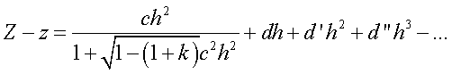
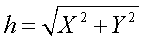

Creates a surface with a user-defined radial or toric profile.
USERSAG X x [ fcn ] c c' ... [ TORIC r [ k ] ] [ aperture ]
Y y
Z z
| Option | Description |
|---|---|
| X, Y or Z | axis of symmetry |
| x, y or z | location along axis |
| fcn | user-defined function |
| c c' ... | coefficients (up to 66) |
| TORIC r | flag to create a TORIC surface of radius r |
| aperture | ELLIPSE, RECTANGLE, or HEXAGONAL |
USERSAG Z z c k d d’ d" ... USERSAG Z z c k d


This surface can extend to infinity unless a
LOCAL command follows, or a trailing aperture option of
the following form is specified:
ELLIPSE a [ a' [ o [ s [ s' ] ] ] ]
RECTANGLE
HEXAGONAL a [ o [ s [ s' ] ] ]
a a' are the heights in the other two transverse directions.
For the HEXAGONAL form, a is the center-to-vertex distance (maximum height).
o is an optional central hole ratio.
s s' are the transverse coordinates of the center of the aperture.